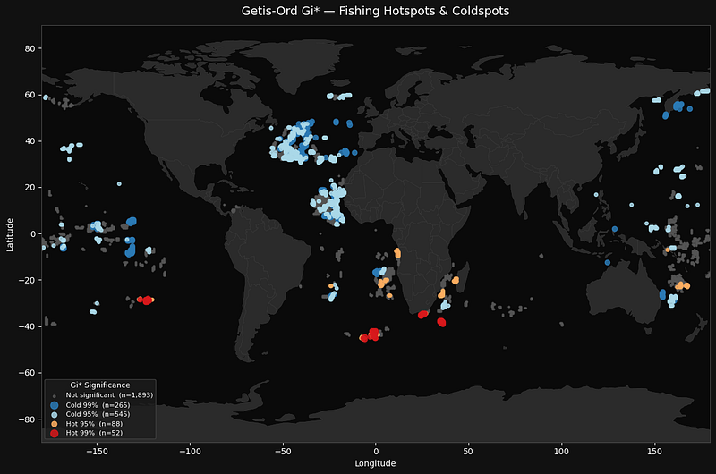

Deep Analysis of Fishing Data
Spatial and temporal analysis of AIS fishing data. Hotspot detection using Getis-Ord Gi*, clustering, and cartographic visualizations for monitoring and decision-making.
Hello, I'm
Sr Data Scientist · AI Engineer · Consultant
Building intelligent systems at the intersection of Machine Learning, Computer Vision, and NLP. I turn complex data into production-ready AI solutions — from research to deployment.
Selected work in AI, data science, and software engineering — from production SaaS to academic research.

Spatial and temporal analysis of AIS fishing data. Hotspot detection using Getis-Ord Gi*, clustering, and cartographic visualizations for monitoring and decision-making.

Intelligent document processing using OCR, computer vision, and NLP. Automates header extraction, signature/stamp detection, and textual analysis for a large health insurance provider.

Automatic summarization system for Brazilian Federal Supreme Court (STF) rulings using T5 and BERT. Compares machine-generated summaries with human-written references.

AI-powered invoice processing with OCR, NLP, and LLM workflows. Automates data extraction, classification, and report generation from financial documents.

AI-based solution to detect, segment, and reconstruct road networks from satellite imagery. Combines segmentation models with geometric analysis for smart-city applications.

Drone-based livestock counting using computer vision. Automates animal detection and counting with high accuracy, reducing operational time, labor, and animal stress.
I'm a Senior Data Scientist and Sr Consultant at KPMG Brasil with deep expertise in building end-to-end machine learning systems — from data exploration and model development to production deployment and monitoring.
My work spans Computer Vision (YOLO, object detection, segmentation, satellite imagery), NLP and LLMs (BERT, T5, GPT, RAG, document processing, summarization), and Data Science (ETL, predictive modeling, data quality assessment, exploratory data analysis).
I have experience with Microsoft Azure (DataBricks, Azure Data Lake, Azure ML, Azure Form Recognizer), SQL and NoSQL databases, VectorDB (PineCone, Chroma, Qdrant), and orchestration tools like Airflow, MLflow, and LangGraph.
I also build full-stack AI products — including SaaS platforms like ResumeMatch, Media Handler, and side projects like Shrimp Dev Blog and Promo Finder — using FastAPI, React, Docker, and Cloudflare.
Open to consulting, collaborations, and interesting projects.